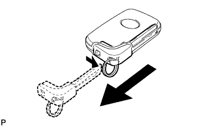
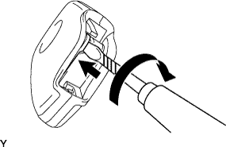
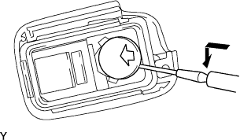
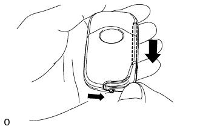
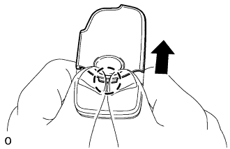
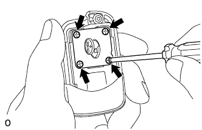
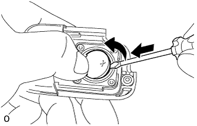
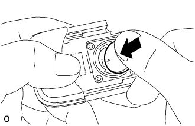
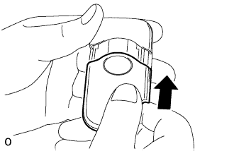

TRANSMITTER BATTERY > REPLACEMENT |
| 1. REMOVE TRANSMITTER BATTERY |
|  |
Push and hold the release knob in the direction indicated by the arrow in the illustration. Then take the mechanical key out of the case.
|  |
Insert a precision screwdriver into the gap and turn the screwdriver to detach the transmitter housing cover.
|  |
Insert a precision screwdriver into the gap and remove the battery (lithium battery: CR1632).
| 2. REMOVE TRANSMITTER BATTERY (w/ Battery Cover) |
|  |
Push and hold the release knob in the direction indicated by the arrow in the illustration.
Remove the mechanical key from the case.
|  |
Detach the claw and remove the slide cover.
|  |
Remove the 4 screws and battery cover.
Remove the O-ring.
|  |
Insert a precision screwdriver into the gap and remove the battery (lithium battery: CR1632).
| 3. INSTALL TRANSMITTER BATTERY (w/ Battery Cover) |
|  |
Install a battery (lithium battery: CR1632) with the positive (+) side facing upward as shown in the illustration.
Install a new O-ring.
Install the battery cover with the 4 screws.
|  |
Attach the claw to install the slide cover.
Insert the mechanical key into the transmitter.
Press one of the transmitter's switches and check that the LED illuminates.
| 4. INSTALL TRANSMITTER BATTERY |
 |
Install the battery (lithium battery: CR1632) with the positive (+) side facing upward as shown in the illustration.
Install the transmitter housing cover by pressing down on it.
Insert the mechanical key into the transmitter.
Press one of the transmitter's switches and check that the LED illuminates.